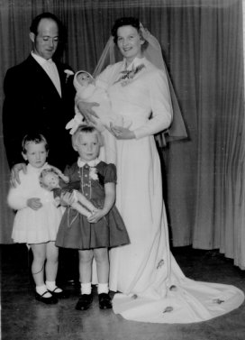
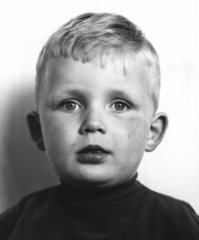
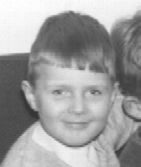
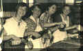
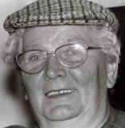

|
Pieternella Maria (Nel) Vermeij |
 |
|
| Kind van: | Anthonie
Vermeij en Elisabeth de Pee |
|
| Geboren op: | 10/12/1932 | |
| te: | Dubbeldam | |
| Getrouwd met: | Jan van de Velde (24/04/1931) | |
| op: | 30/10/1958 | |
| te: | Dubbeldam | |
| Kinderen | ||
| Naam: | Geboortedatum, -plaats: | |
| Anthonie Obik (Tony) | 30/01/1960, Dubbeldam |
 |
| Albert Jan (Bert) | 25/12/1963, Dordrecht |
 |
|
Foto's |
||
 |
 |
|